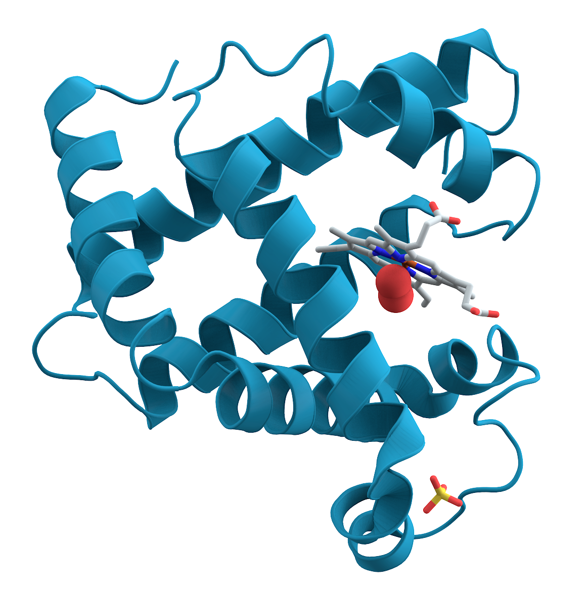
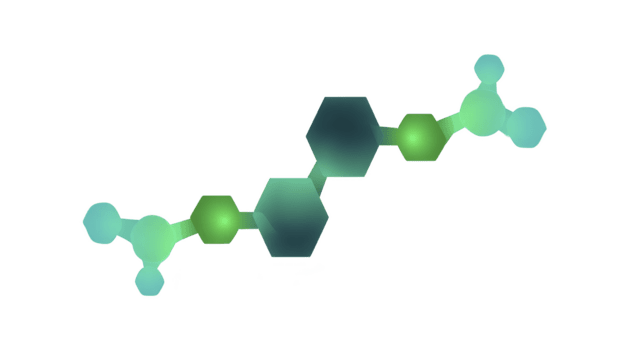
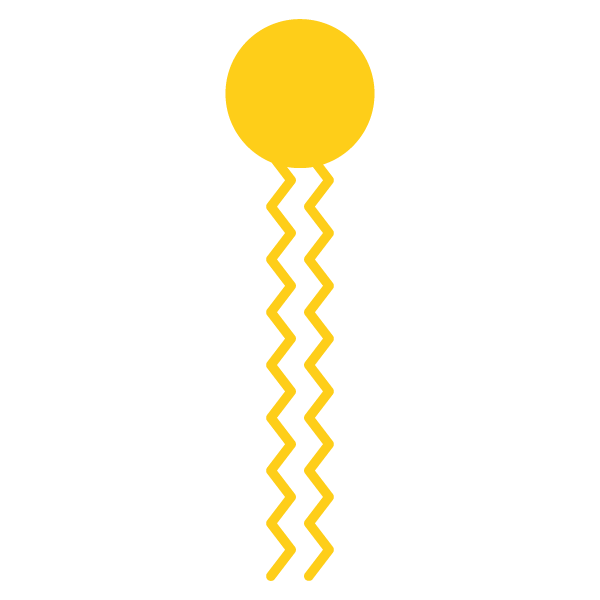
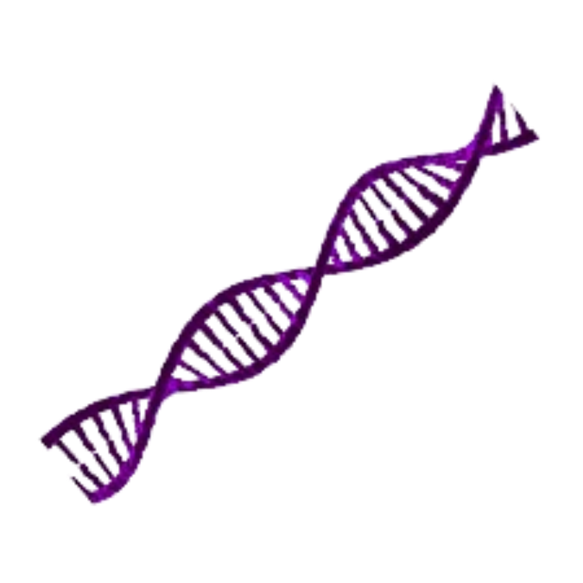
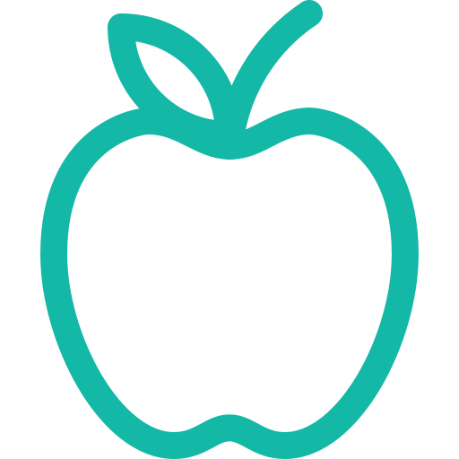

Explore o conteúdo
Saiba tudo sobre bioquímica
Um mapa rápido de tudo o que você vai encontrar: o que é a Bioquímica, as biomoléculas, onde ela é aplicada e curiosidades que parecem ficção.

O que é a Bioquímica?
A Bioquímica é a ciência que estuda as bases químicas dos seres vivos, investigando as biomoléculas, suas estruturas, reações e funções que mantêm a vida.
Ela conecta a Química e a Biologia para explicar desde os processos celulares até as funções de tecidos e organismos inteiros.
Saiba maisPrincipais Biomoléculas
Passe o mouse para ver cada uma girar em 3D.

Proteínas
Moléculas formadas por aminoácidos que desempenham funções estruturais, enzimáticas, hormonais e de defesa nos organismos.
SAIBA MAIS
Carboidratos
São a principal fonte de energia para as células e também participam da formação de estruturas biológicas.
SAIBA MAIS
Lipídios
Atuam no armazenamento de energia, na composição das membranas celulares e na proteção de órgãos.
SAIBA MAIS
Ácidos Nucleicos
Responsáveis pelo armazenamento e transmissão das informações genéticas por meio do DNA e do RNA.
SAIBA MAISAplicações da Bioquímica
Da farmácia ao laboratório de genética — onde este conhecimento vira prática.
-
Medicina
Ajuda a compreender doenças, desenvolver medicamentos e melhorar tratamentos médicos.
-

Nutrição
Permite entender como os nutrientes são absorvidos e utilizados pelo organismo.
-
Biotecnologia
Contribui para o desenvolvimento de novas tecnologias aplicadas à saúde, agricultura e indústria.
-
Farmácia
Fundamental para a criação e estudo de medicamentos e seus efeitos no corpo humano.
-

Genética
Ajuda a compreender a hereditariedade e os mecanismos de transmissão das características biológicas.
Fatos que parecem ficção
Clique nos cards para virá-los.
“Enzimas são consumidas nas reações que aceleram.”
Verdadeiro ou falso? Responda e veja a explicação na hora.